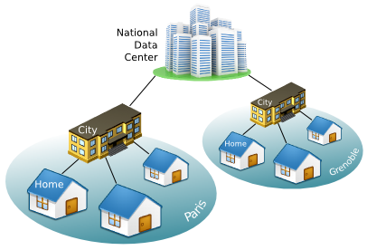
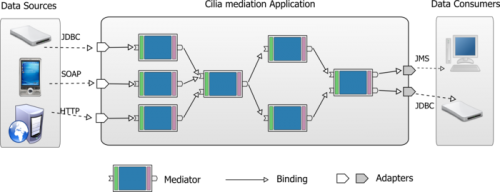

Project Links
Catalog
Other Links

Home Resource Monitoring data-mediation system
In this use case, we will show how to self-manage distributed mediation application using Cube framework. In a nutshell, Mediation applications are systems that collect data from several sources, then transport and process the data so it can be consumed by several sinks. Their architecture takes the form of a directed acyclic graph, where nodes are data mediator components - or Mediators - (receiving, processing and forwarding data) and arcs are connections between Mediators (transmitting data). In this use case, we will use Cilia mediation framework as target system. A small description of this framework is given in the next section. In this tutorial, we start first by explaining and testing the targeted Cilia mediation application manually. After that, we will progressively integrate and use Cube to self-manage the different mediators on the different execution nodes.
The Managed System: Cilia mediation chains
The Use case
In this use case, we will manage a distributed application which collect data from several sources (homes), then aggregate, transform and forward the data to a national data-center for statistic and analytic operations.
This distributed application is already implemented using Cilia Mediation framework (see the next sub-section). In this use case, we are interesting in controlling and self-managing this application using Cube. We will show progressively how Cube can be used to self-management such systems.
What is Cilia Framework?
Cilia is a specialized framework for the construction of mediation applications. It proposes both: a specialized component model and a dynamic execution environment. Utilization of a component model aims the construction of mediation applications by composition of components, which leverages the modularity of applications. In addition to modularity, dynamicity is other important property in Cilia approach, mediation applications are enough flexible to change their architecture dynamically at run-time.
Notice that Adapters are special Mediators which are at the beginning and the end of the mediation chain.
The Use case Mediators
Here the list of the provided Cilia Mediators along with a small description of their job.
| Mediator Component | Description |
| GP | “Gas Probe”. It Collects consumption information from the Gas meter. |
| EP | “Electricity Probe”. It Collects consumption information from the Electricity meter. |
| WP | “Water Probe”. It Collects consumption information from the Water meter. |
| HC | “House Calculator”. It calculates and aggregates data received from the different probes. |
| CA | “City Aggregator”. It aggregates data received from the different homes. |
| CC | “City Calculator”. It calculates different measures about the global city consumption. |
| NA | “Nationl Aggregator”. It aggregates the different measured data of all the cities. |
| toDB | “To Database”. It saves the collected data in the Database. |
Testing the Cilia application without Cube
Before starting to manipulate Cube framework, we will first try to launch the presented Cilia application manually. Further in this tutorial, we will show how Cilia benefits of Cube framework to self-manage all the distributed mediation application.
All In one gateway
Cilia Mediators execute within an OSGi platform. OSGi provides the standardized primitives that allow applications to be constructed from small, reusable and collaborative components. These components can be composed into an application and deployed. Notice that there is no requirement to know about this technology in order to execute and test the actual use case. For more information visit http://www.osgi.org (or http://felix.apache.org the Apache implementation of this specification).
Cilia chains can be constructed either with an XML description file (called dscilia), or with Java code. In the following example we show how to construct the already described Mediation Chain in only one gateway. In this case, all the bindings between the mediators are local invocations.
The following listing is snapshot of the Cilia XML file used to instantiate the different Mediators of this local mediation chain (see the full version here).
<cilia>
<chain id="DemoChain">
<adapters>
<adapter-instance type="GP" id="gp1"/>
<adapter-instance type="EP" id="ep1"/>
<adapter-instance type="WP" id="wp1"/>
<adapter-instance type="TODB" id="toDB1"/>
</adapters>
<mediators>
<mediator-instance type="HC" id="hc1"/>
<mediator-instance type="CA" id="ca1"/>
<mediator-instance type="CC" id="cc1"/>
<mediator-instance type="NA" id="na1"/>
</mediators>
<bindings>
<binding from="gp1" to="hc1"/>
<binding from="ep1" to="hc1"/>
<binding from="wp1" to="hc1"/>
<binding from="hc1" to="ca1"/>
<binding from="ca1" to="cc1"/>
<binding from="cc1" to="na1"/>
<binding from="na1" to="toDB1"/>
</bindings>
</chain>
</cilia>..deploy
You notice that there is no manner to change the mediation chain structure. In the case where we want to add a new gateway and dispatch the different mediators between them, the task is so tricky. We should write new two dscilia files, where in each file there is a description of the local mediator instances.
Distributed gateways
Now, we will test the Cilia mediation application is distributed gateways.
The actual version of Cilia, does not have a distributed chains specification file. We will divide the dscilia file in different files for each gateway, and we will use JMS adapters between these parts of the mediation chain.
Prepare the Cube's Archetype
The Archetype is an XML file containing the description of the administrator's objectives as a set of constraints on the different managed elements (For more information see the Archetype Specification). In the following, we will write the Archetype specification for our explained use case.
We start be putting a global XML tag called “cube” where we specify the different namespaces for all the different extensions.
<cube xmlns:core="fr.liglab.adele.cube.core"
xmlns:cilia="fr.liglab.adele.cube.cilia">
<!-- archetype goes here -->
</cube>In between the “cube” XML tag, we define our application's archetype.
<cube>
<archetype name="demo"
symbolicname="Home Resource Monitoring data-mediation system"
version="1.0">
<!-- archetype content -->
</archetype>
</dube>Within the “archetype” tag, we start by enumerating the different managed element types, using the core types scopetype, nodetype and componenttype :
<types> <!-- SCOPES --> <core:scope id="City"/> <core:scope id="Central"/> <!-- NODES --> <core:node id="Gateway"/> <core:node id="Server"/> <core:node id="DataCenter"/> <!-- COMPONENTS TYPES --> <core:component id="GP" description="Gas Probe"/> <core:component id="WP" description="Water Probe"/> <core:component id="EP" description="Electricity Probe"/> <core:component id="HC" description="House Calculator"/> <core:component id="CA" description="City Aggregator"/> <core:component id="CC" description="City Calculator"/> <core:component id="NA" description="National Aggregator"/> </types>
Next, we define constraints on these types, and hence on their instances (check the list of the provided constraints):
<constraints> </constraints>
Testing the use case without integrating Cilia
Cube provides tools to simulate the creation of components, and to see at any time the runtime model of one Cube Agent (which represents the managed system part)…
see CommandLine tool.